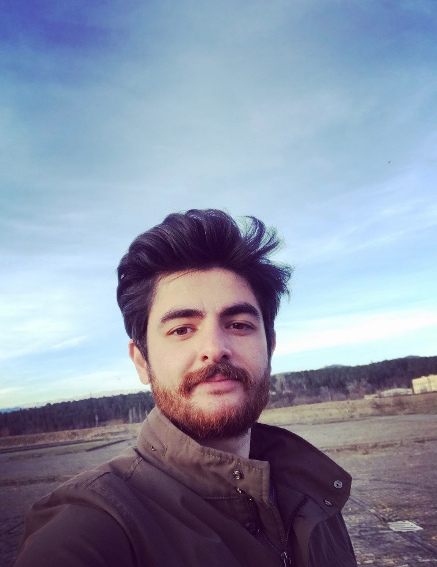

<main>
    <section>

        <h3>“{{language ? "ადამიანი შეძლებს ყველაფერს თუ მას ამის სურვილი აქვს":"A person can do everything if he wants it"}}”</h3>


        <article class="content">

            <aside class="left">
                <div class="img">
                    
                </div>
            </aside>

            <aside class="right">
                <p>{{language ? "დავიბადე ქალაქ ქუთაისში. ქუთაისშივე დავამთვრე მე_20 საჯარო სკოლა, რის შემდეგაც ჩავაბარე ილიას
                    სახელმწიფო უნივერსიტეტში. ბაკალავრიატის დასრულების შემდეგ გადავწყვიტე
                    ამეღო მაგისტრის ხარისხი ფილოსოფიაში. თუმცა ფილოსოფიამ, როგორი სახითაც სამწუხაროდ ის არსებობს
                    დღევანდელ საქართველოში, იმედი გამიცრუა და ამის გამო მაგისტრატურის დამთავრების შემდეგ გადავწყვიტე
                    დავბრუნებოდი ინფორმატიკას და გავიარე კურსები IT-აკადემია სტეპში.":"I was born in the city of Kutaisi. I graduated from the 20th public school in Kutaisi, after which I entered Ilia State University. After completing my bachelor's degree, I decided to pursue a master's degree in philosophy. However, philosophy, In the form as it now exists in Georgia, disappointed me, and because of this, after graduating with a master's degree, I decided to return to computer science and take courses at the IT Academy Step."}}</p>

                <p>{{language ? "ვარ მიზანდასახული, შრომის მოყვარე, ვცდილობ საკუთრი თვის განვითარებას, ვაკეთბ ჩემი შესაძლებლობების მაქსიმუმს, ნებისმიერ საქმეში რასაც ხელს მოვკიდებ.":"I am purposeful, hard working, I try to develop myself, I do my best, in whatever I do."}}</p>

                <p>{{language ? "ჩემი ჰობია მოგზაურობა, ცურვა, ფეხბურთის თმაში და ჰობად გადამექცა კოდის წერაც.":"My hobbies are traveling, swimming, playing football and writing code has also become a hobby for me."}}</p>
                <button appButtonDir routerLink="/contact">{{language ? "კონტაქტი":"contact"}}</button>
                <ul>
                    <li><a href="https://www.facebook.com/iago.xaratishvili" target="_blank"><i style="margin-right: 15px;" class="fab fa-facebook-square"></i></a></li>
                    <li><a href="https://www.linkedin.com/in/iago-kharatishvili" target="_blank"><i style="margin-right: 15px;" class="fab fa-linkedin"></i></a></li>
                    <li><a href="https://github.com/iago03" target="_blank"><i class="fab fa-github-square"></i></a></li>
                </ul>
            </aside>

        </article>


        <article class="skills">
            <h4>{{language ? "უნარები":"skills"}}</h4>
            <ul class="programing-skills">
                <li>HTML</li>
                <li appScroll></li>
                <li>CSS</li>
                <li appScroll></li>
                <li>JS</li>
                <li appScroll></li>
                <li>ANGULAR</li>
                <li appScroll></li>
            </ul>
        </article>


    </section>
</main>